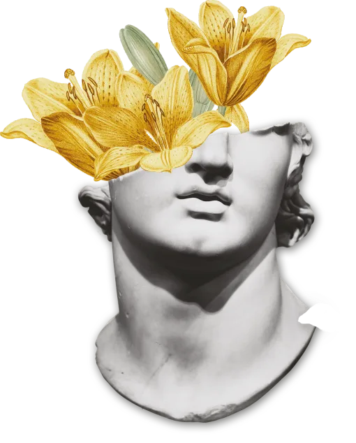
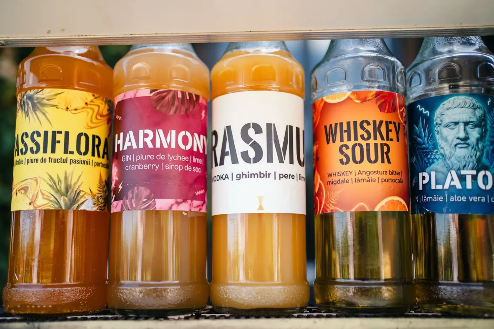

Erasmus
proaspăt · picantvodka, ghimbir, pere, lime
Ghimbirul încălzește, para îmblânzește.
Meniul 2026
Creațiile casei poartă nume de filosofi. Clasicele sunt făcute ca la carte. Iar cele fără alcool nu fac niciun compromis. Siropurile le facem noi, în casă.

Creațiile casei
vodka, ghimbir, pere, lime
Ghimbirul încălzește, para îmblânzește.
gin, lychee, lămâie, merișoare, sirop de soc
Flori de soc și lychee, ușor acrișor.
gin, lămâie, aloe vera, grapefruit, cimbrișor
Limpede, amărui, cu un gând de cimbrișor.
whiskey, migdale, portocală, lămâie, bitter
Clasicul, rescris cu migdale și portocală.
rom, fructul pasiunii, lămâie
Soare în pahar, pe ritm cubanez.

Verificate de generații
prosecco, soc, lime, apă minerală
Aperol, prosecco, apă minerală
tequila, grapefruit, lime, Tajín
gin, Campari, vermut
gin, apă tonică, ierburi & citrice
rom, lime, Coca-Cola
Disaronno, portocală, lămâie
Zero alcool, zero compromis
aloe vera, grapefruit, lămâie
Răcoritor, cu un final amărui.
sirop de ghimbir, pere, lămâie, apă minerală
Spumos, cu scânteie de ghimbir.
lychee, cranberry, lămâie
Roz, fructat, ușor acrișor.
mere verzi, scorțișoară & migdale, lămâie
Ca o plăcintă cu mere, dar rece.
Pentru miri, pentru firmă sau pentru sărbătorit: îl creăm, îi dăm un nume și îl punem în meniul serii.